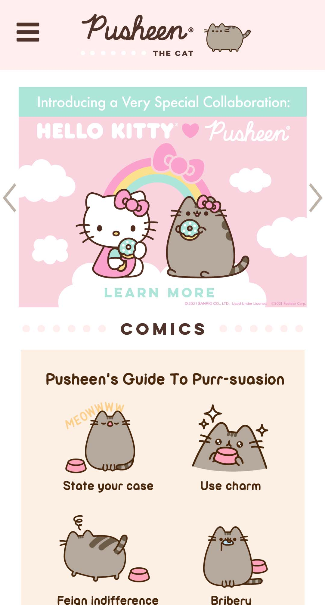
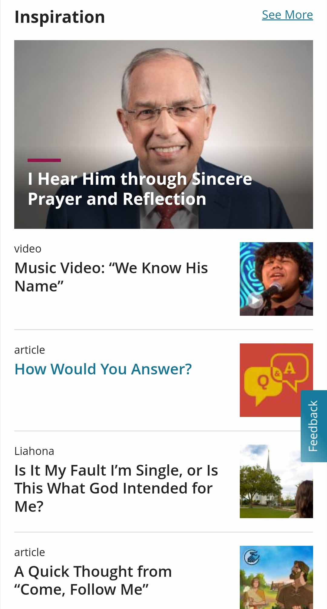
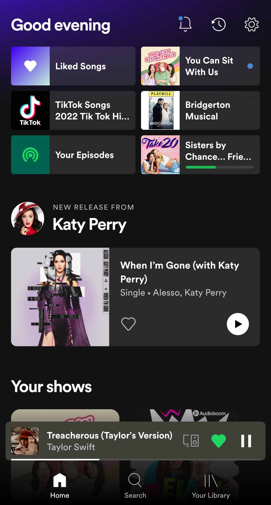

Pusheen
https://pusheen.com/ Visual Heiarchy basically means when information/content is well organized so your eye knows what is the most important and knows where to go next. The Pusheen website is a great example of this as throughout the page it has images go from larger to smaller squares. The text on the banners also show us where to look first by being bolder, or in different more high contrast colors.
Church of Jesus Christ
https://www.churchofjesuschrist.org/ The Rule of thirds says that pyschologically our eye is more attracted to a 1/3 or 2/3 point on an image, meaning that if you cut an image into thirds the focal point is best places on the first or last line because it is pleasing to our eyes. I thought the church website was a great example of this because they have their story headlines and then a thumbnail using the rule of thirds.
spotify
https://www.spotify.com/us/ Repetition is all about using similar elements throughout your website to keep things looking clean and consistent. It helps brand your company, we all know what tesla font looks like, Repetition keeps things recognizable. Spotify does a great job at this, they use the same two fonts all throughout the site just in different sizes and weights. All of the images are all cut out the exact same way as well